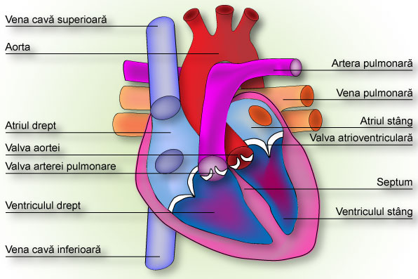

-
Circulaţia venoasă  În cadrul sistemului circulator, sângele este adus înapoi, la inimă, prin componenta venoasă. De la ţesuturi prin capilare, sângele revine la cord prin venule, care unindu-se se captează în vene. Vena cavă superioară şi vena cavă inferioară, sunt canalele care colectând tot sângele venos al circulaţiei mari, se deschid în atriul drept . Vasele de sange conectate la inimă Circulaţia venoasă reprezintă un transport sanguin de întoarcere, care se realizează mai greoi, în primul rând din cauza că, cu excepţia părţii superioare a corpului, se desfăşoară împotriva gravitaţiei. Factorii cei mai importanţi care asigură desfăşurarea optimă a circulaţiei venoase sunt: respiraţia, contracţiile ventriculare, contracţiile musculaturii scheletice ale membrelor inferioare şi pulsaţiile arterelor. Inspiraţia pulmonară realizează o aspiraţie a sângelui venos spre cord, mai ales în venele mari, deoarece se creează o presiune intratoracică negativă. Totodată, inspiraţia profundă, exercită o presiune asupra organelor abdominale, prin intermediul diafragmei, presiune care se transmite venelor. Se poate conchide deci, că respiraţia corectă şi efortul fizic moderat au efecte dintre cele mai favorabile asupra circulaţiei venoase.